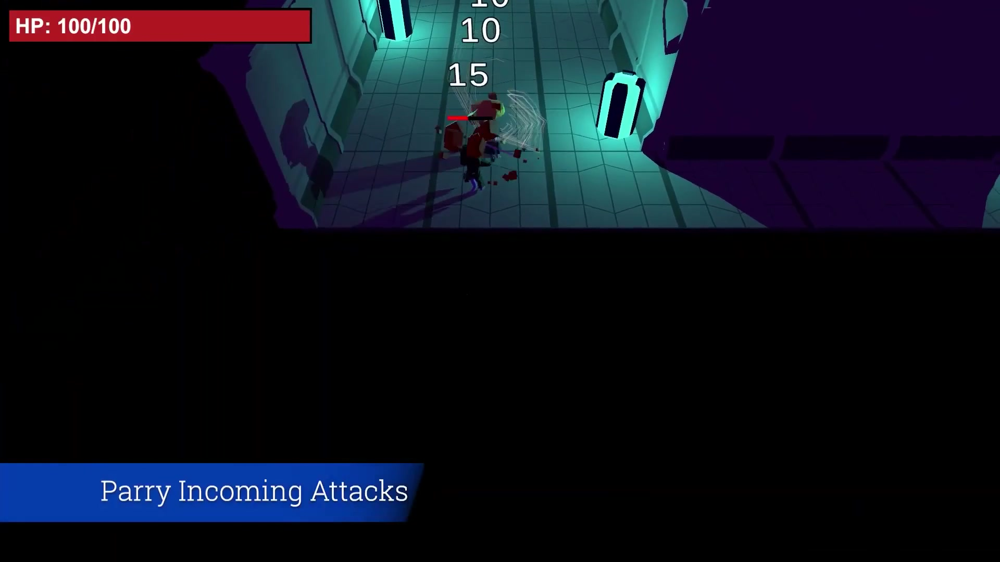
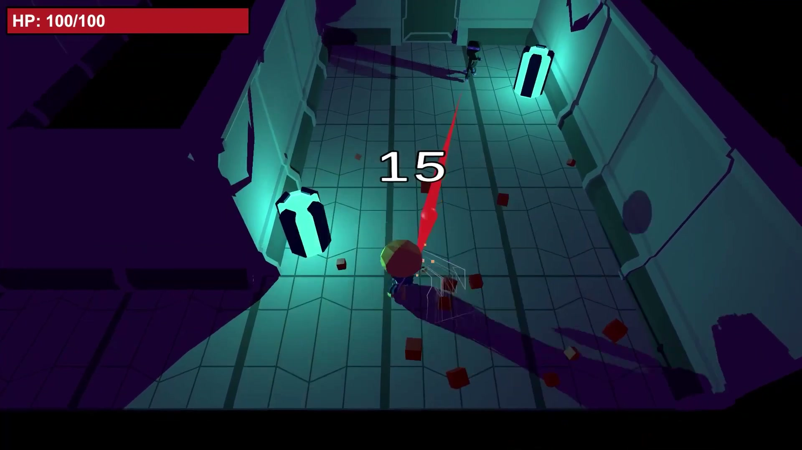
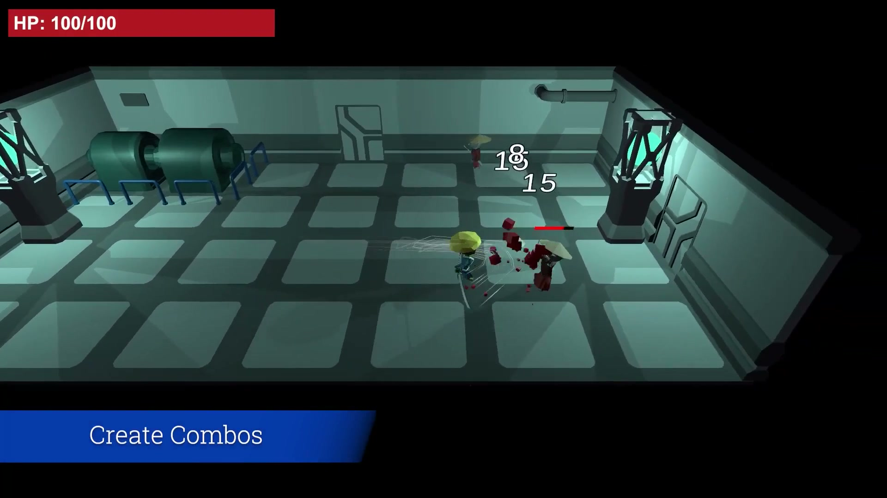

Experience
Play as a dinosaur in cyberpunk Japan-Gea, using melee attacks, parries, projectiles, and equipment during enemy encounters.

Description
Jho’s Vengeance places a dinosaur protagonist in a stylized cyberpunk setting. Combat combines a basic attack with defensive timing, ranged options, and the equipment available to the character.
The documented controls include attack, parry, item pickup, a projectile action, weapon switching, dash, and inventory access. The feature footage shows the game’s combat presentation, including incoming attacks and combo sequences.

Detailed features
Melee attacks and parries
Close-range combat depends on distance and timing. Movement brings the character into range, while an attack creates a short opportunity to affect a nearby opponent.

Projectiles and equipment
An additional combat action extends the character’s options beyond basic movement and attacks. It changes how the player responds to the spacing and timing of an encounter.

Enemy encounters in Japan-Gea
Other actors create a changing situation for the player to read. Their positions and behavior make movement and timing relevant to the next decision.
Build summary
The Unity source separates the project into runtime C# components. The saved code includes character controller, rigidbody physics, collision / trigger events, animation control, navigation agents. The script examples below identify concrete parts of this project’s implementation.
- Technology
- Unity
- Scope
- Unity project
- Presentation
- 1080p or higher
Implementation examples
LevelEvents.csInventoryUI.csLevelSystem.csPlayerAudio.csBetterButton.csHealthBarCutFallDown.cs
Feature video
Actual project footage · 1920 × 1080 · No narration